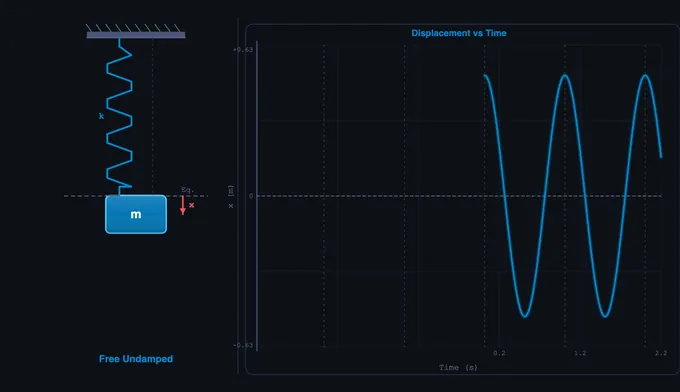
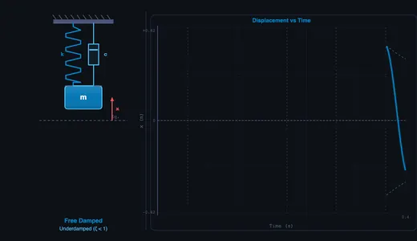
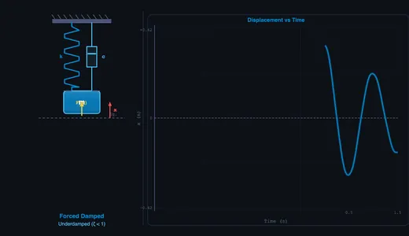

Spring-Mass-Damper Simulator
ωn = √(k/m) • ζ = c/2√(km) • Free • Damped • Forced — Simulate • Explore • Practice • Quiz
1 Overview
This free vibration analysis tool simulates a spring-mass-damper system across four vibration types: free undamped, free damped, forced, and forced damped. The interactive canvas shows an animated spring-mass-damper mechanism on the left and a live oscilloscope-style waveform chart on the right, letting you visualise displacement versus time with envelope curves for damped oscillations.
The simulator calculates natural frequency ωn = √(k/m), damping ratio ζ = c/(2√km), period, amplitude, phase angle, and frequency ratio in real time. It covers the complete vibration curriculum from undamped free oscillation to resonance in forced systems, and critical damping behaviour — all essential for mechanical, civil, and aerospace engineering courses.
2 Setting the Scene
The simulator opens in Simulate mode with Free Undamped vibration active (m = 5 kg, k = 200 N/m). The mass oscillates at its natural frequency, and the waveform chart traces displacement over time. Six readout cards display Natural Frequency, Damping Ratio, Period, Amplitude, Phase Angle, and Frequency Ratio.
Use the Vibration Type pills to switch between the four types. Sliders for mass, spring constant, damping coefficient, forcing frequency, forcing amplitude, and initial displacement are grouped below. Presets like Car Suspension, Bridge Resonance, Tuning Fork, and Earthquake Damper configure real-world scenarios instantly.
3 Running the Demo
Free Undamped: The ideal oscillator. Adjust mass and spring k to see how ωn changes. The waveform is a pure sine wave with constant amplitude — the system oscillates forever.
Free Damped: Enable the damping slider (c). Watch the amplitude decay exponentially. Adjust ζ from underdamped (ζ < 1) through critically damped (ζ = 1) to overdamped (ζ > 1) and observe the waveform transition from oscillatory to non-oscillatory return.
Forced Vibration: Set a forcing frequency ω and amplitude F0. The steady-state amplitude depends on the frequency ratio r = ω/ωn. Sweep the forcing frequency slider toward ωn to see the amplitude grow — approaching resonance.
Forced Damped: The most complete model. Both damping and forcing are active. The amplitude magnification factor and phase angle are calculated in real time. At resonance (r ≈ 1), damping is the only thing limiting amplitude.
The Bridge Resonance preset dramatically demonstrates what happens when forcing frequency matches natural frequency with low damping — a powerful teaching tool for understanding structural failures.
4 Behind the Physics
Explore mode contains concept cards across three categories: Free Vibrations (natural frequency, damping ratio, logarithmic decrement, underdamped/critically damped/overdamped), Forced Vibrations (resonance, magnification factor, phase angle, transmissibility), and Applications (vibration isolation, seismic design, machinery balancing). Each card includes formulas, diagrams, and worked examples.
Key formulas covered: ωn = √(k/m), ζ = c/(2mωn), ωd = ωn√(1−ζ²), and the forced response amplitude X = (F0/k)/√((1−r²)² + (2ζr)²).
5 Try a Problem
Practice mode generates unlimited random vibration problems: calculate natural frequency from given m and k, find the damping ratio, determine the damped natural frequency, or compute the steady-state amplitude at a given frequency ratio. Full step-by-step solutions are provided for incorrect answers.
Quiz mode presents 5 randomised questions per session covering all four vibration types. Questions mix conceptual items (e.g., what happens at resonance) with numerical calculations. A score breakdown is displayed at the end.
6 Things to Notice
- Start with Free Undamped to establish a baseline, then add damping to see the decay envelope appear on the waveform chart.
- Sweep the forcing frequency slowly through ωn to watch resonance build and then subside — the peak is dramatic with low damping.
- Use the Bridge Resonance preset to demonstrate the Tacoma Narrows Bridge effect: low damping + forcing near ωn produces dangerously large oscillations.
- Compare underdamped, critically damped, and overdamped by adjusting the damping slider — critically damped (ζ = 1) returns to rest fastest without oscillating.
- Check the frequency ratio readout: When r = 1, the system is at resonance. When r > √2, forced vibration is isolated (transmitted force is less than applied force).
- The simulator runs on mobile devices in landscape mode — useful for quick concept checks between classes.
Understanding Mechanical Vibrations — Free Interactive Spring-Mass-Damper Simulator

Mechanical vibrations are oscillatory motions of bodies and structures that occur in virtually every engineering system. From the suspension of a car to the strings of a guitar, from earthquake-resistant buildings to precision machining, understanding vibrations is critical for mechanical, civil, and aerospace engineers. A spring-mass-damper system is the fundamental model used to study vibrations — it consists of a mass (m) connected to a spring (stiffness k) and a viscous damper (damping coefficient c). This simple yet powerful model captures the essential physics of oscillatory motion, including natural frequency, damping ratio, resonance, and frequency response.
Free vs Forced Vibrations — The Four Key Modes
Free undamped vibration occurs when a system oscillates at its natural frequency ωn = √(k/m) without energy dissipation — an idealised case producing perpetual sinusoidal motion x(t) = A·cos(ωn·t). In reality, all systems have some damping. Free damped vibration introduces the damping ratio ζ = c/(2√(km)), producing three distinct behaviours: underdamped (ζ < 1) with oscillatory decay, critically damped (ζ = 1) with the fastest non-oscillatory return to equilibrium, and overdamped (ζ > 1) with slow exponential return. Forced vibration occurs when an external periodic force drives the system. The steady-state response depends on the frequency ratio r = ω/ωn. Forced damped vibration combines both phenomena, with the amplitude magnification factor X = (F0/k)/√((1−r²)² + (2ζr)²) and phase angle φ = arctan(2ζr/(1−r²)).


Resonance — The Critical Phenomenon
Resonance occurs when the forcing frequency equals or approaches the natural frequency (ω ≈ ωn, r ≈ 1). At resonance, the amplitude of oscillation can grow dramatically — theoretically to infinity in an undamped system. This is why the Tacoma Narrows Bridge collapsed in 1940 and why soldiers break step when crossing bridges. Damping limits the peak amplitude at resonance: the lower the damping ratio, the sharper and higher the resonance peak. Engineers must design systems to either avoid resonance or provide sufficient damping to limit dangerous vibration amplitudes. Vibration isolation, achieved by choosing system parameters so that r > √2, ensures transmitted force is less than the applied force.
How to Use This Simulator
In Simulate mode, select a vibration type (Free Undamped, Free Damped, Forced, or Forced Damped) and adjust mass, spring constant, damping coefficient, forcing frequency, forcing amplitude, and initial displacement. The left side of the canvas shows an animated spring-mass-damper system with a realistic zigzag spring, dashpot, and oscillating mass. The right side displays a live waveform chart (oscilloscope-style) showing displacement vs time with envelope curves for damped oscillations. Readout cards display natural frequency, damping ratio, period, amplitude, phase angle, and frequency ratio in real time. Use presets like Car Suspension, Bridge Resonance, Tuning Fork, and Earthquake Damper to explore realistic configurations. Switch to Explore to study 12 vibration concepts across Free Vibrations, Forced Vibrations, and Applications. Practice generates random calculation problems, and Quiz tests your knowledge with 5 randomised questions.
Key Formulas & Calculations
The natural frequency ωn = √(k/m) determines how fast a system oscillates when released from displacement. The damping ratio ζ = c/(2mωn) classifies the system response. The damped natural frequency ωd = ωn√(1−ζ²) is the actual oscillation frequency of an underdamped system. The logarithmic decrement δ = ln(xn/xn+1) = 2πζ/√(1−ζ²) quantifies the rate of amplitude decay. For forced systems, the transmissibility ratio and magnification factor are essential for vibration isolation design. All these calculations are performed in real time by this simulator.
The Four Damping Regimes — One Case Study Each
The same spring-mass-damper equation produces four very different behaviours depending on the damping ratio ζ. Run each preset and observe the displacement trace:
| Regime | ζ range | Behaviour | Real-world example |
|---|---|---|---|
| Undamped | ζ = 0 | Pure sinusoid, no decay | Idealised LC tank circuit; mass on a frictionless spring in vacuum |
| Underdamped | 0 < ζ < 1 | Oscillates while amplitude decays exponentially | Car suspension (ζ ≈ 0.2–0.4 by design — gives a controlled bounce without a harsh ride) |
| Critically damped | ζ = 1 | Fastest return to rest with no overshoot | Automatic door closer; analog ammeter pointer; gun-recoil mechanisms |
| Overdamped | ζ > 1 | Slow exponential return, no oscillation | Heavy hydraulic damper on a fire-rated door; oil dashpot on a stair-tread |
Designers choose the regime. Suspensions are deliberately under-damped because critical damping feels uncomfortable to passengers and slows recovery from bumps; door closers are deliberately critically damped because oscillation would slam the door.
Worked Example — Car Suspension Damping Ratio
A passenger car wheel is modelled as a single-degree-of-freedom system with:
- Quarter-car sprung mass m = 350 kg (one corner of a 1400 kg car)
- Spring stiffness k = 35,000 N/m (a typical coil spring)
- Shock absorber damping c = 1900 N·s/m
The calculations:
ωn = √(k/m) = √(35000/350) = 10 rad/s ⇒ fn ≈ 1.59 Hz
cc = 2√(km) = 2√(35000×350) = 7000 N·s/m
ζ = c/cc = 1900/7000 = 0.27
ωd = ωn√(1−ζ²) = 10 × √(1−0.073) = 9.63 rad/s
A natural frequency near 1.5 Hz is no accident — human comfort tolerates 1–2 Hz vertical oscillation but feels nauseous outside that band. A ζ of about 0.25–0.35 is the industry sweet spot: enough damping to control a bump within 2–3 oscillations, little enough that road texture is filtered out as a soft ride.
Reading a Logarithmic Decrement Plot
In a real lab you rarely measure ζ directly — you measure consecutive peaks of a decaying oscillation and back out ζ from the logarithmic decrement:
δ = ln(xn/xn+1) ⇒ ζ = δ / √(4π² + δ²)
Worked example: in the simulator’s Free Damped preset, suppose successive peaks measure 50 mm, 35 mm, 24.5 mm.
- δ = ln(50/35) = 0.357
- ζ = 0.357 / √(4π² + 0.357²) = 0.057 (a lightly damped system)
- Sanity check: ratio of the second pair, ln(35/24.5) = 0.357 — same δ, confirming exponential decay
This is the standard method used in modal-testing labs and on lab benches with an accelerometer + oscilloscope.
Famous Vibration Failures — What Went Wrong
- Tacoma Narrows Bridge (1940) — collapsed in a 19 m/s wind at a torsional natural frequency of 0.2 Hz. Aeroelastic flutter, not pure resonance, but the underlying lesson is the same: an under-damped structure met an excitation it could not handle.
- London Millennium Bridge (2000) — opened, swayed laterally at about 1 Hz under pedestrian traffic, closed two days later. Pedestrians instinctively synchronised their gait with the sway, driving it further. Retrofitted with 37 viscous dampers and 52 tuned mass dampers.
- Taipei 101 (2004–present) — a 660-tonne tuned mass damper hangs near the top of the tower, swinging out of phase with wind-induced sway. The damper itself is now a tourist attraction.
- Washing machine spin cycle — every household machine passes through its natural frequency on spin-up. Drum-mounted concrete weights plus rubber feet (a damped isolator) keep transmitted force below the floor’s rocking limit. When isolators fail, the machine “walks”.
Industrial Damping Methods — Choosing the Right One
| Method | Typical ζ | Where used |
|---|---|---|
| Viscous (fluid) damper | 0.05 – 1.0 | Vehicle shocks, building seismic dampers, door closers |
| Friction (Coulomb) damper | variable, amplitude-dependent | Brake pads, slip-friction joints in older steel buildings |
| Hysteretic / material damping | 0.001 – 0.05 | Built into rubber bushings, elastomer mounts |
| Tuned mass damper (TMD) | n/a — cancels one mode | Tall buildings (Taipei 101, John Hancock Centre), bridge stays |
| Magnetorheological (MR) damper | controllable | Premium adaptive vehicle suspensions; bridge cables |
Selected References
- Rao, S. S. — Mechanical Vibrations, 6th ed., Pearson, Chapters 2–4.
- Inman, D. J. — Engineering Vibration, 4th ed., Pearson.
- ISO 2041:2018 — Mechanical vibration, shock and condition monitoring — Vocabulary.
- ISO 18431-2 — Methods for the experimental determination of mechanical mobility, including logarithmic-decrement procedures.
Explore Related Simulators
If you found this Vibrations simulator helpful, explore our Simple Harmonic Motion simulator, Hooke’s Law simulator, Spring Design simulator, Gyroscope simulator, and Simple Pendulum simulator for more hands-on practice.